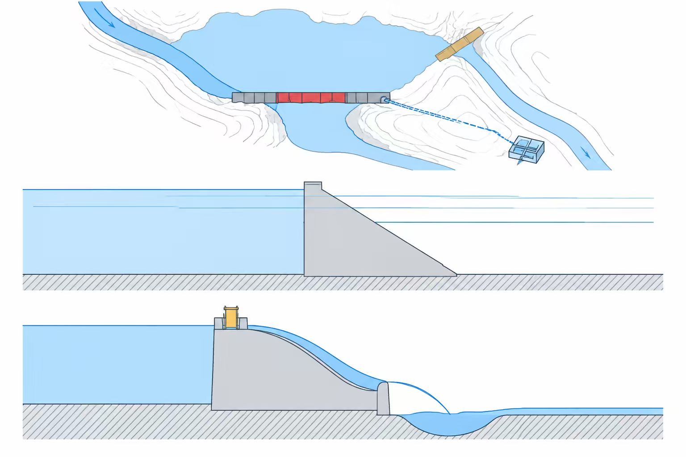
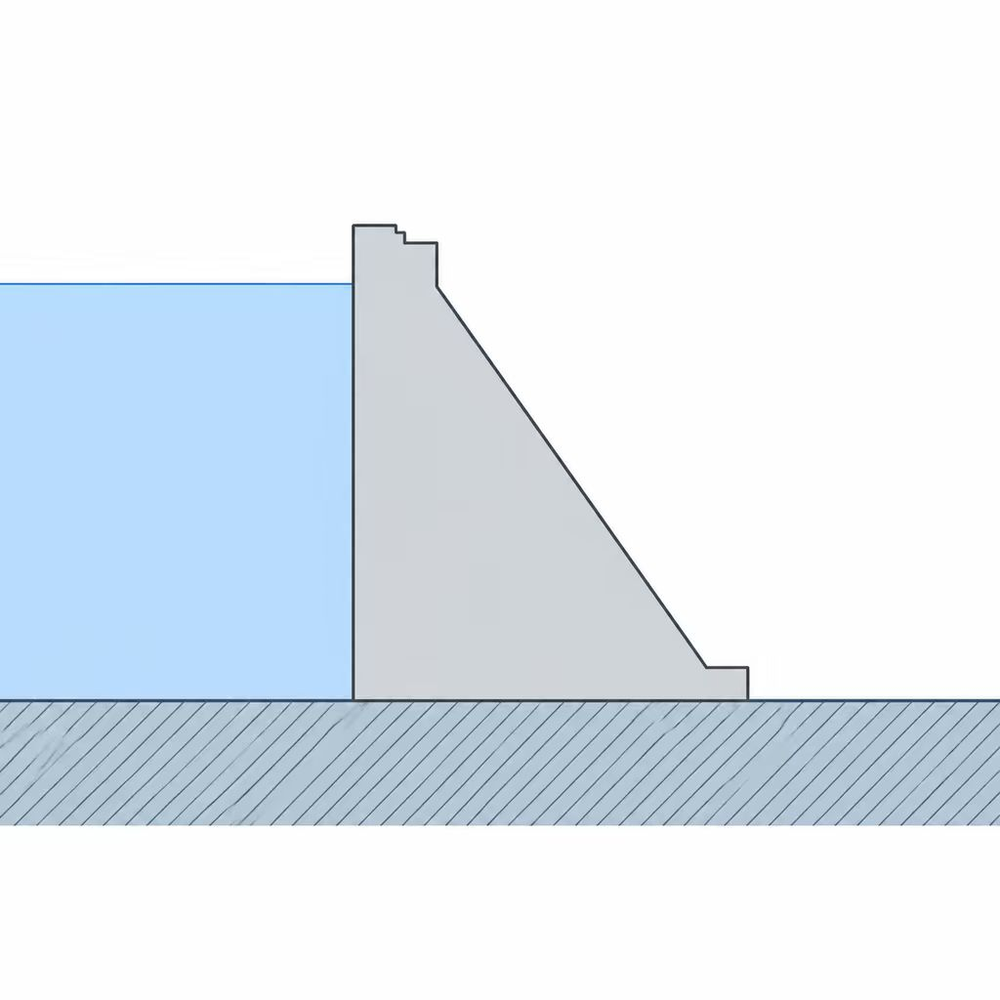

工程概况
| 项目 | 福建省龙岩市武平县中堡镇大绩村 |
|---|---|
| 工程等别 | 小（1）型水库 |
| 集雨面积 | 约 10.7 km² |
| 总库容 | 约 230 万 m³ |
| 正常蓄水位 | 503.00 m |
| 主坝 | 混凝土重力坝，最大坝高 40 m |
| 副坝 | 均质土坝，最大坝高 7 m |
| 下游灌溉面积 | 约 1500 亩 |

图1：枢纽布置与坝型示意图

图2：主坝混凝土重力坝剖面图
实时监测
下表展示大绩水库各监测点当日 8:00 自动采集的渗流量与水位数据。状态分级：正常（运行参数在设计范围内）、关注（数据偏离常态，需加密观测）、暂无数据（本次未采集到读数，不代表 0）。
| 监测点名称 | 监测类型 | 渗流量(L/s) | 水位(m) | 更新时间 | 状态 |
|---|---|---|---|---|---|
| 主坝坝基扬压力测点 U1 | 渗流 | 0.42 | 501.18 | 2026-10-07 08:00 | 正常 |
| 副坝渗流压力测点 S2 | 渗流 | 0.86 | 500.94 | 2026-10-07 08:00 | 关注 |
| 绕坝渗流测点 R1 | 渗流 | — | — | — | 暂无数据 |
| 坝顶 GNSS 位移测点 D1 | 位移 | 不涉及此项 | 不涉及此项 | 2026-10-07 08:00 | 正常 |
| 库水位计 W1 | 水位 | 不涉及此项 | 501.26 | 2026-10-07 08:00 | 正常 |
| 雨量站 P1 | 雨量 | — | — | — | 暂无数据 |
历史数据
本栏目用于查询各监测点的历史渗流量与水位变化趋势。本阶段为静态首页，暂以当日 8:00 采集数据为例；历史曲线与检索功能将在接入实时数据库后的下一迭代提供。
关于我们
本平台由河海大学"三人游"小组（姚凯、李恒毅、曹哲）为智慧水利课程作业开发，面向水库管理所值班员、工程科技术负责人与上级防汛监管部门，提供大绩水库工程概况与大坝安全监测数据的集中展示。